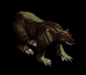
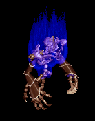
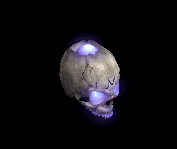
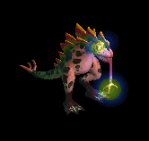

HP回復ポーション をドロップするmob一覧
一覧ページへ
| ノースフェラトゥ | アンデット | ボス2 | |||||||
|---|---|---|---|---|---|---|---|---|---|
 | 鞭(490) | 牙(330) | HP回復(490) | 職業鎧(270) | 指輪(250) | 特殊1(200) | 双剣(330) | ||
| リッチ | アンデット | ボス2 | |||||||
 | 杖(490) | 翼(330) | HP回復(490) | グローブ(270) | 冠(250) | ブローチ(400) | 本(490) | 水晶(330) | |
| ジャイアント | 人間 | セミ1 | |||||||
 | 鈍器(390) | 牙(260) | HP回復(390) | 足(220) | 首(200) | 能力向上1(160) | 双剣(260) | ||
| コロッサス | 人間 | ボス1 | |||||||
 | 鈍器(470) | 牙(310) | HP回復(470) | 足(260) | 指輪(240) | 能力向上1(190) | 双剣(310) | ||
| ナーガナイト | 悪魔 | セミ2 | |||||||
 | ステッキ(420) | 弓(280) | HP回復(420) | 職業鎧(230) | 首(210) | 能力向上2(170) | 銃(280) | ||
| オーガオフィサー | 悪魔 | セミ3 | |||||||
 | ステッキ(450) | 弓(300) | HP回復(450) | 鎧(250) | イヤリング(230) | 能力向上1(180) | 銃(300) | ||
| ブラウンベアー | 動物 | 一般4 | |||||||
|  | 牙(300) | 笛(200) | HP回復(300) | 足(170) | 爪(150) | 宝石(120) | 双剣(300) | ||
| 弓張月熊 | 動物 | ボス3 | |||||||
 | 牙(510) | 鈍器(340) | HP回復(510) | マント(280) | 爪(260) | 宝石(200) | 双剣(510) | ||
| ノースフェラトゥEx | アンデット | ボス2 | |||||||
| 鞭(2000) | 牙(1330) | HP回復(2000) | 職業鎧(1110) | 指輪(1000) | ブローチ(500) | 双剣(1330) | ||
| リッチEx | アンデット | ボス2 | |||||||
| 杖(2000) | 翼(1330) | HP回復(2000) | グローブ(1110) | 冠(1000) | 宝石(800) | 本(2000) | 水晶(1330) | |
| ジャイアントEx | 人間 | セミ1 | |||||||
| 鈍器(450) | 牙(300) | HP回復(450) | 足(250) | 首(230) | 能力向上1(180) | 双剣(300) | ||
| コロッサスEx | 人間 | ボス1 | |||||||
| 鈍器(1200) | 牙(800) | HP回復(1200) | 足(670) | 指輪(600) | 能力向上1(480) | 双剣(800) | ||
| ナーガナイトEx | 悪魔 | セミ2 | |||||||
| ステッキ(650) | 弓(430) | HP回復(650) | 職業鎧(360) | 首(330) | 能力向上2(260) | 銃(430) | ||
| オーガオフィサーEx | 悪魔 | セミ3 | |||||||
| ステッキ(800) | 弓(530) | HP回復(800) | 鎧(440) | イヤリング(400) | 能力向上1(320) | 銃(530) | ||
| ブラウンベアーEx | 動物 | 一般4 | |||||||
| 牙(300) | 笛(200) | HP回復(300) | 足(170) | 爪(150) | 宝石(120) | 双剣(300) | |||
| 弓張月熊Ex | 動物 | ボス3 | |||||||
| 牙(2800) | 鈍器(1870) | HP回復(2800) | マント(1560) | 爪(1400) | 宝石(1120) | 双剣(2800) | ||
| ティンバーマンEx | 神獣 | 一般4 | |||||||
 | 杖(300) | 片手剣(200) | HP回復(300) | グローブ(170) | 首(150) | 能力向上1(120) | クロー(200) | 本(300) | |
| エンティングEx | 神獣 | セミ1 | |||||||
 | 杖(450) | 鈍器(300) | HP回復(450) | 腰(250) | イヤリング(230) | 能力向上1(180) | 本(450) | ||
| ダークファイアEx | 神獣 | ボス1 | |||||||
|  | 槍(1200) | 翼(800) | HP回復(1200) | 職業鎧(670) | 指輪(600) | 特殊1(480) | 箒(1200) | 水晶(800) | |
| ノースフェラトゥZin | アンデット | ボス2 | |||||||
| 鞭(1100) | 牙(730) | HP回復(1100) | 職業鎧(610) | 指輪(550) | ブローチ(500) | 双剣(730) | ||
| リッチZin | アンデット | ボス2 | |||||||
| 杖(1100) | 翼(730) | HP回復(1100) | グローブ(610) | 冠(550) | 宝石(440) | 本(1100) | 水晶(730) | |
| ジャイアントZin | 人間 | セミ1 | |||||||
| 鈍器(650) | 牙(430) | HP回復(650) | 足(360) | 首(330) | 能力向上1(260) | 双剣(430) | ||
| コロッサスZin | 人間 | ボス1 | |||||||
| 鈍器(1000) | 牙(670) | HP回復(1000) | 足(560) | 指輪(500) | 能力向上1(400) | 双剣(670) | ||
| ナーガナイトZin | 悪魔 | セミ2 | |||||||
| ステッキ(750) | 弓(500) | HP回復(750) | 職業鎧(420) | 首(380) | 能力向上2(300) | 銃(500) | ||
| オーガオフィサーZin | 悪魔 | セミ3 | |||||||
| ステッキ(900) | 弓(600) | HP回復(900) | 鎧(500) | イヤリング(450) | 能力向上1(360) | 銃(600) | ||
| ブラウンベアーZin | 動物 | 一般4 | |||||||
| 牙(1200) | 笛(800) | HP回復(1200) | 足(670) | 爪(600) | 宝石(480) | 双剣(1200) | |||
| 弓張月熊Zin | 動物 | ボス3 | |||||||
| 牙(1200) | 鈍器(800) | HP回復(1200) | マント(670) | 爪(600) | 宝石(480) | 双剣(1200) | ||
| ティンバーマンZin | 神獣 | 一般4 | |||||||
| 杖(1200) | 片手剣(800) | HP回復(1200) | グローブ(670) | 首(600) | 能力向上1(480) | クロー(800) | 本(1200) | |
| エンティングZin | 神獣 | セミ1 | |||||||
| 杖(650) | 鈍器(430) | HP回復(650) | 腰(360) | イヤリング(330) | 能力向上1(260) | 本(650) | ||
| ダークファイアZin | 神獣 | ボス1 | |||||||
| 槍(1000) | 翼(670) | HP回復(1000) | 職業鎧(560) | 指輪(500) | 特殊1(400) | 箒(1000) | 水晶(670) | ||
| ジャイアント骸骨 Zin | アンデット | 一般4 | |||||||
|  | 宝石(30) | 状態異常回復2(50) | 腕刺青(90) | 肩刺青(130) | ステッキ(170) | HP回復(200) | |||
| バイキングヘッド2 Zin | アンデット | ボス1 | |||||||
 | 冠(150) | 鈍器(250) | 帰還(450) | 職業鎧(650) | 肩刺青(850) | HP回復(1000) | |||
| デスマスク3 Zin | アンデット | ボス2 | |||||||
 | 鍵(270) | 状態異常回復2(450) | 十字架(810) | 職業鎧(1170) | 状態異常回復1(1530) | HP回復(1800) | |||
| アンデッド魔法師 Zin | アンデット | 一般3 | |||||||
 | 宝石(40) | マント(70) | 帰還(120) | マント(170) | 矢(220) | HP回復(260) | 魔弾(220) | ||
| アンデッドライト3 Zin | アンデット | ボス1 | |||||||
 | 宝石(150) | マント(250) | 腕刺青(450) | 十字架(650) | 肩刺青(850) | HP回復(1000) | |||
| アンデッドメイジ Zin | アンデット | 一般4 | |||||||
 | 指輪(30) | マント(50) | 弾(90) | 手首(130) | 矢(170) | HP回復(200) | 魔弾(170) | ||
| アンデッドロック Zin | アンデット | 一般4 | |||||||
 | 鍵(30) | 状態異常回復2(50) | 弾(90) | 手首(130) | 矢(170) | HP回復(200) | 魔弾(170) | ||
| ボーンキメラ3 Zin | アンデット | ボス1 | |||||||
 | 片手剣(150) | 首(250) | 宝石(450) | CP回復(650) | 肩刺青(850) | HP回復(1000) | クロー(150) | ||
| 装甲ボーンキメラ Zin | アンデット | 一般4 | |||||||
 | 片手剣(30) | 首(50) | 牙(90) | 職業鎧(130) | 状態異常回復1(170) | HP回復(200) | クロー(30) | 双剣(90) | |
| エルフ貴族 Zin | 人間 | 一般4 | |||||||
 | 能力向上2(50) | イヤリング(150) | 足(100) | CP回復(80) | 能力向上2(20) | HP回復(30) | |||
| ならず者 Zin | 人間 | 一般3 | |||||||
 | 両手剣(70) | 爪(200) | 腕刺青(130) | 笛(100) | 弓(30) | HP回復(40) | 鎌(70) | 銃(30) | |
| 襲撃団 Zin | 人間 | 一般4 | |||||||
 | 鍵(50) | 爪(150) | 牙(100) | 笛(80) | 弓(20) | HP回復(30) | 双剣(100) | 銃(20) | |
| ルーンファイター Zin | 人間 | セミ3 | |||||||
 | 両手剣(180) | 爪(530) | 牙(350) | 笛(280) | 状態異常回復1(70) | HP回復(110) | 鎌(180) | 双剣(350) | |
| シーク守護者3 Zin | 人間 | ボス2 | |||||||
 | 鎧(450) | 首(1350) | 杖(900) | 手首(720) | 両手剣(180) | HP回復(270) | 鎌(180) | 本(900) | |
| 逃亡魔法師2 Zin | 人間 | セミ1 | |||||||
 | 投擲(90) | CP回復(260) | 両手剣(180) | 槍(140) | ステッキ(40) | HP回復(50) | 鎌(180) | 箒(140) | |
| 逃亡ハンター Zin | 人間 | 一般4 | |||||||
 | 投擲(50) | ブローチ(150) | 両手剣(100) | 能力向上1(80) | 状態異常回復1(20) | HP回復(30) | 鎌(100) | ||
| 脱獄犯2 Zin | 人間 | セミ3 | |||||||
 | 投擲(180) | 宝石(530) | 両手剣(350) | 槍(280) | 弾(70) | HP回復(110) | 鎌(350) | 箒(280) | |
| 狂魔(狂った悪魔…) Zin | 悪魔 | 一般4 | |||||||
 | 宝石(130) | 爪(160) | スリング(70) | 鞭(40) | 矢(20) | HP回復(10) | 魔弾(20) | ||
| ゴールデンマスク3 Zin | 悪魔 | ボス2 | |||||||
 | 宝石(1170) | ブローチ(1440) | スリング(590) | 鞭(360) | 矢(180) | HP回復(90) | 魔弾(180) | ||
| 剣闘士2 Zin | 悪魔 | セミ3 | |||||||
 | 片手剣(460) | 爪(560) | 帰還(230) | 鞭(140) | 矢(70) | HP回復(40) | クロー(460) | 魔弾(70) | |
| 死神4 Zin | 悪魔 | ボス3 | |||||||
 | 指輪(1560) | 首(1920) | 帰還(790) | 手首(480) | 弓(240) | HP回復(120) | 銃(240) | ||
| 魔女4 Zin | 悪魔 | ボス3 | |||||||
 | 鎧(1560) | イヤリング(1920) | 帰還(790) | 笛(480) | 状態異常回復1(240) | HP回復(120) | |||
| サキュバス Zin | 悪魔 | 一般4 | |||||||
 | 鎧(130) | ブローチ(160) | 弾(70) | 笛(40) | ステッキ(20) | HP回復(10) | |||
| カマキリ戦士3 Zin | 悪魔 | ボス2 | |||||||
 | 両手剣(1170) | ブローチ(1440) | 腕刺青(590) | 槍(360) | 状態異常回復1(180) | HP回復(90) | 鎌(1170) | 箒(360) | |
| バッタ悪魔 Zin | 悪魔 | 一般4 | |||||||
 | 投擲(130) | 鈍器(160) | 帰還(70) | CP回復(40) | 腰(20) | HP回復(10) | |||
| パンプキンヘッド3 Zin | 悪魔 | ボス1 | |||||||
 | 指輪(650) | 弾(800) | 腕刺青(330) | 十字架(200) | 腰(100) | HP回復(50) | |||
| エルダーパンプキン Zin | 悪魔 | セミ2 | |||||||
 | 指輪(360) | 首(440) | 弾(180) | 十字架(110) | 腰(60) | HP回復(30) | |||
| ルーンモンキー Zin | 動物 | ボス1 | |||||||
 | 杖(350) | イヤリング(250) | 牙(200) | 職業鎧(150) | 矢(100) | HP回復(50) | 本(350) | 双剣(200) | 魔弾(100) |
| マウンテン戦士4 Zin | 動物 | ボス3 | |||||||
 | 冠(840) | イヤリング(600) | 牙(480) | 十字架(360) | 矢(240) | HP回復(120) | 双剣(480) | 魔弾(240) | |
| ウィングコング2 Zin | 動物 | セミ3 | |||||||
 | 冠(250) | イヤリング(180) | 牙(140) | CP回復(110) | 肩刺青(70) | HP回復(40) | 双剣(140) | ||
| 蛙1 Zin | 動物 | セミ1 | |||||||
 | 投擲(120) | 爪(90) | 足(70) | 槍(50) | 腕刺青(40) | HP回復(20) | 箒(50) | ||
| ラジエータカエル Zin | 動物 | 一般4 | |||||||
 | 投擲(70) | 爪(50) | 腕刺青(40) | 鞭(30) | 槍投擲機(20) | HP回復(10) | |||
| ハリネズミカエル1 Zin | 動物 | セミ2 | |||||||
 | 鍵(190) | 爪(140) | 足(110) | 槍(80) | 槍投擲機(60) | HP回復(30) | 箒(80) | ||
| カメレオン Zin | 動物 | 一般3 | |||||||
 | 冠(90) | 鈍器(70) | スリング(50) | 能力向上1(40) | 弓(30) | HP回復(10) | 銃(30) | ||
| ラジエータカメ3 Zin | 動物 | ボス2 | |||||||
|  | 冠(630) | ブローチ(450) | スリング(360) | 能力向上1(270) | 肩刺青(180) | HP回復(90) | |||
| ダークバッファロ2 Zin | 神獣 | セミ2 | |||||||
 | 指輪(250) | 爪(360) | 腕刺青(190) | 鞭(30) | 腰(60) | HP回復(140) | |||
| 赤パネルバッファ Zin | 神獣 | 一般4 | |||||||
 | 指輪(90) | 状態異常回復2(130) | 弾(70) | 鞭(10) | 肩刺青(20) | HP回復(50) | |||
| エメラルドバッファ4 Zin | 神獣 | ボス3 | |||||||
 | 指輪(1080) | 爪(1560) | 弾(840) | 鞭(120) | 腰(240) | HP回復(600) | |||
| ユニコーン1 Zin | 神獣 | セミ1 | |||||||
 | 冠(160) | マント(230) | 牙(120) | 鎧(20) | 肩刺青(40) | HP回復(90) | 双剣(120) | ||
| ペガサス Zin | 神獣 | 一般4 | |||||||
 | 冠(90) | マント(130) | 帰還(70) | 鞭(10) | 弓(20) | HP回復(50) | 銃(20) | ||
| ブルーウイング2 Zin | 神獣 | ボス1 | |||||||
 | 冠(450) | マント(650) | 牙(350) | 槍(50) | 弓(100) | HP回復(250) | 箒(50) | 双剣(350) | 銃(100) |
| 使徒 Zin | 神獣 | 一般3 | |||||||
 | 鎧(120) | 鈍器(170) | 腕刺青(90) | 笛(10) | 肩刺青(30) | HP回復(70) | |||
| 審判官 Zin | 神獣 | 一般4 | |||||||
 | 能力向上2(90) | 鈍器(130) | 帰還(70) | 笛(10) | 矢(20) | HP回復(50) | 魔弾(20) | ||
| 堕天使 Zin | 神獣 | 一般3 | |||||||
 | 投擲(120) | ブローチ(170) | 帰還(90) | 能力向上1(10) | 状態異常回復1(30) | HP回復(70) | |||
| イーグルヘッド2 Zin | 神獣 | セミ3 | |||||||
 | 鍵(320) | イヤリング(460) | 足(250) | 手首(40) | ステッキ(70) | HP回復(180) | |||
| ライオンヘッド3 Zin | 神獣 | ボス1 | |||||||
 | 投擲(450) | 状態異常回復2(650) | 足(350) | 能力向上1(50) | ステッキ(100) | HP回復(250) | |||
| 黒い炎 Ex | 神獣 | ボス1 | |||||||
| 槍(1200) | 翼(800) | HP回復(1200) | 職業鎧(670) | 指輪(600) | 特殊1(480) | 箒(1200) | 水晶(800) | ||
| ヴァンパイア君主 | アンデット | ボス2 | |||||||
| 鞭(490) | 牙(330) | HP回復(490) | 職業鎧(270) | 指輪(250) | 特殊1(200) | 双剣(330) | ||
| ヴァンパイア君主 Ex | アンデット | ボス2 | |||||||
| 鞭(2000) | 牙(1330) | HP回復(2000) | 職業鎧(1110) | 指輪(1000) | ブローチ(500) | 双剣(1330) | ||
| 大骸骨 Zin | アンデット | 一般4 | |||||||
| 宝石(30) | 状態異常回復2(50) | 腕刺青(90) | 肩刺青(130) | ステッキ(170) | HP回復(200) | ||||
| 骸骨魔法師 Zin | アンデット | 一般4 | |||||||
| 宝石(40) | マント(70) | 帰還(120) | マント(170) | 矢(220) | HP回復(260) | 魔弾(220) | ||
| さすらう傭兵 Zin | 人間 | 一般4 | |||||||
| 両手剣(70) | 爪(200) | 腕刺青(130) | 笛(100) | 弓(30) | HP回復(40) | 鎌(70) | 銃(30) | |
| 堕落オーガ Zin | 悪魔 | 一般4 | |||||||
| 宝石(130) | 爪(160) | スリング(70) | 鞭(40) | 矢(20) | HP回復(10) | 魔弾(20) | ||
| サキュバス Zin | 悪魔 | 一般4 | |||||||
| 鎧(130) | ブローチ(160) | 弾(70) | 笛(40) | ステッキ(20) | HP回復(10) | |||
| カラフルトカゲ Zin | 動物 | 一般4 | |||||||
| 冠(90) | 鈍器(70) | スリング(50) | 能力向上1(40) | 弓(30) | HP回復(10) | 銃(30) | ||
| アーカン Zin | 神獣 | 一般4 | |||||||
| 能力向上2(90) | 鈍器(130) | 帰還(70) | 笛(10) | 矢(20) | HP回復(50) | 魔弾(20) | ||
| 時の木 Zin | 神獣 | セミ1 | |||||||
| 杖(1200) | 片手剣(800) | HP回復(1200) | グローブ(670) | 首(600) | 能力向上1(480) | クロー(800) | 本(1200) | |
| 時の老樹 Zin | 神獣 | セミ1 | |||||||
| 杖(650) | 鈍器(430) | HP回復(650) | 腰(360) | イヤリング(330) | 能力向上1(260) | 本(650) | ||
| 骸骨魔法師 Zin | アンデット | 一般4 | |||||||
| 宝石(40) | マント(70) | 帰還(120) | マント(170) | 矢(220) | HP回復(260) | 魔弾(220) | ||
| 大骸骨 Zin | アンデット | 一般4 | |||||||
| 宝石(30) | 状態異常回復2(50) | 腕刺青(90) | 肩刺青(130) | ステッキ(170) | HP回復(200) | ||||
| さすらう傭兵 Zin | 人間 | 一般4 | |||||||
| 両手剣(70) | 爪(200) | 腕刺青(130) | 笛(100) | 弓(30) | HP回復(40) | 鎌(70) | 銃(30) | |
| サキュバス Zin | 悪魔 | 一般4 | |||||||
| 鎧(130) | ブローチ(160) | 弾(70) | 笛(40) | ステッキ(20) | HP回復(10) | |||
| カラフルトカゲ Zin | 動物 | 一般4 | |||||||
| 冠(90) | 鈍器(70) | スリング(50) | 能力向上1(40) | 弓(30) | HP回復(10) | 銃(30) | ||
| 堕落オーガ Zin | 悪魔 | 一般4 | |||||||
| 宝石(130) | 爪(160) | スリング(70) | 鞭(40) | 矢(20) | HP回復(10) | 魔弾(20) | ||
| ブラウンベアーEv | 動物 | 一般4 | |||||||
| 牙(1200) | 笛(800) | HP回復(1200) | 足(670) | 爪(600) | 宝石(480) | 双剣(1200) | |||
| サキュバスSp | 悪魔 | セミ1 | |||||||
 | 鎧(1200) | ブローチ(500) | 弾(700) | 笛(600) | 職業鎧(500) | HP回復(100) | |||
| 鬼イナゴSp | 悪魔 | 一般4 | |||||||
 | 投擲(1100) | 鈍器(800) | 帰還(300) | CP回復(400) | 腰(700) | HP回復(400) | |||
| 堕天使Sp | 神獣 | セミ1 | |||||||
 | 投擲(600) | ブローチ(800) | 帰還(300) | 能力向上1(300) | 状態異常回復1(300) | HP回復(300) | |||
| アンデッド魔法師Sp | アンデット | 一般4 | |||||||
| 宝石(300) | マント(900) | 帰還(400) | 矢(1100) | HP回復(400) | 魔弾(1100) | |||
| アンデッドライト3 Sp | アンデット | セミ1 | |||||||
| 宝石(100) | マント(300) | 腕刺青(400) | 十字架(600) | 肩刺青(900) | HP回復(1000) | |||
| サキュバス3 Sp | 悪魔 | セミ1 | |||||||
 | 鎧(1200) | ブローチ(500) | 弾(700) | 笛(600) | 職業鎧(500) | HP回復(100) | |||
| 覚醒サキュバスZin | 悪魔 | セミ1 | |||||||
 | 鎧(130) | ブローチ(160) | 弾(70) | 笛(40) | ステッキ(20) | HP回復(10) | |||
| カラフルトカゲ Sp | 動物 | 一般4 | |||||||
 | 冠(90) | 鈍器(70) | スリング(50) | 能力向上1(40) | 弓(30) | HP回復(10) | 銃(30) | ||
| カメレオン Sp | 動物 | 一般4 | |||||||
 | 冠(90) | 鈍器(70) | スリング(50) | 能力向上1(40) | 弓(30) | HP回復(10) | 銃(30) | ||
| さすらう傭兵 Zin[2] | 人間 | 一般4 | |||||||
 | 両手剣(70) | 爪(200) | 腕刺青(130) | 笛(100) | 弓(30) | HP回復(40) | 鎌(70) | 銃(30) | |
| 大骸骨 Sp | アンデット | 一般4 | |||||||
 | 宝石(30) | 状態異常回復2(50) | 腕刺青(90) | 肩刺青(130) | ステッキ(170) | HP回復(200) | |||
| アデッドロック Sp | アンデット | 一般4 | |||||||
 | 宝石(300) | マント(900) | 帰還(400) | 矢(1100) | HP回復(400) | 魔弾(1100) |